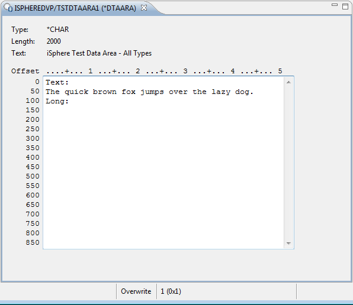
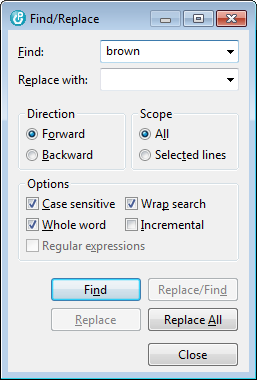

The Data Area Editor is used to edit data areas. There are different
editors for each data area type. For the *CHAR data area editor, the font and the
background color of protected areas can be changed from the
Colors and Fonts preference page.
The Data Area Editor is used to edit data areas. There are different
editors for each data area type. For the *CHAR data area editor, the font and the
background color of protected areas can be changed from the
Colors and Fonts preference page.
The following example shows a *CHAR data area editor:

The status bar at the bottom of the editor shows the cursor position and whether or not the editor is in "Insert" or "Overwrite" mode.
The editor utilizes the Eclipse Search & Replace action. Search & Replace can be started from the menu or by the associated shortcut. Usually that is CTRL+f.

Instead of using the native data area editor you can use take advantage from the Data Space Editor, which are created and maintained by the iSphere Data Space Editor Designer.